Server Setup Notes
Contents
Server Setup Notes¶
My first task was to identify a suitable server in terms of compute and storage space that worked for the project that I had in mind
For my first project, a tiny server was enough
For an ElasticSearch database, I worked with (as per this recommendation) a slightly larger Ubuntu 22.10 server with 4GB RAM, 2 CPUs and regular disk type
During setup, I learned the hard way after getting the PuTTY Fatal Error error No supported authentication methods available (server sent: publickey) (in spite of following this
and this
and this)
setup the server using a password for root user!
In as much as a SSH key is safer, it is simpler to
setup using a password,
setup a superuser
generate the pair of SSH keys and passphrase within the server itself, then
block root user access and
block password authentication to only rely on SSH authentication
Server Access¶
The first step if using a Windows device is to install PuTTY, a SSH and telnet client that allows you to connect securely to a particular physical or virtual server. The latest version can be downloaded from here. Once it is installed, navigate to it as shown below:
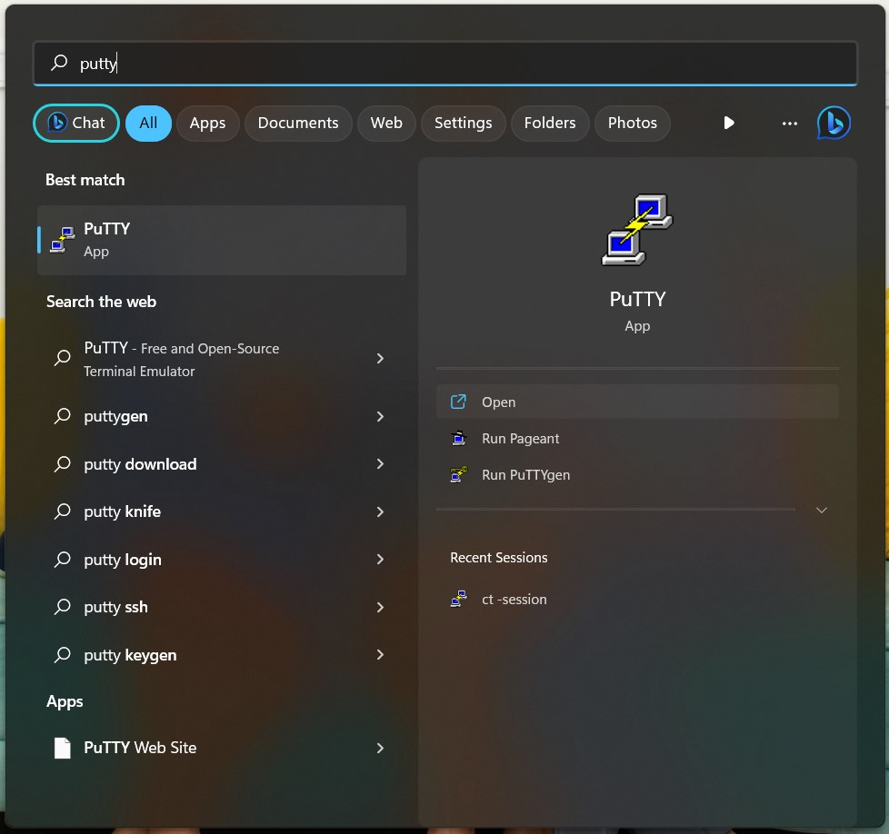
Once you open it, paste the IP address into the correct field; also ensure the port is set to 22 and
the connection type selected is SSH like so:
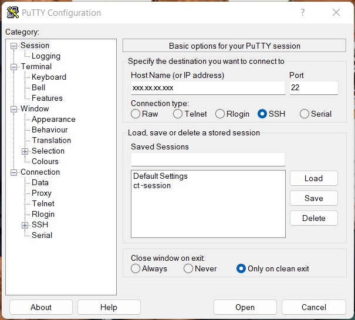
For the first login, you will get the following disclaimer:
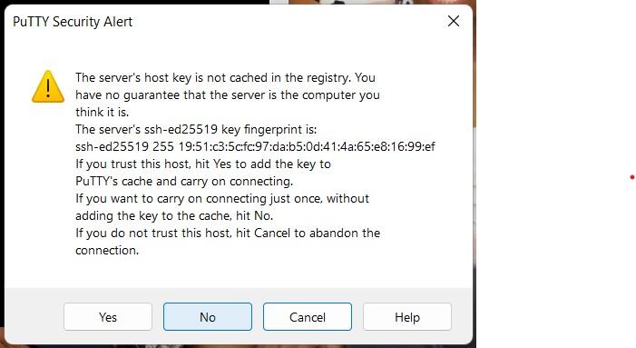
The best thing to do is so choose the option No as selected above, so that you can do the entire configuration without
it being cached.
Superuser creation¶
You will then be prompted for your username, which in this case is root and your password.
For security purposes, you will not see it even as you type it out, but once you press the enter
button, you will be successfully logged in as shown below:
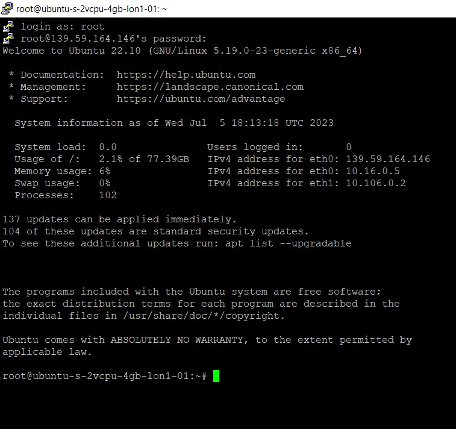
Once logged in, add the new superuser like so:
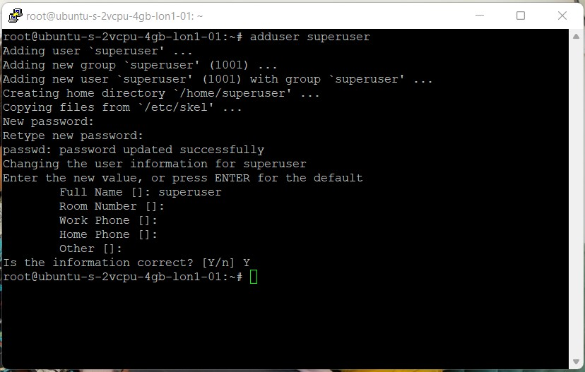
Then make them a superuser by changing their usergroup from the group they are currently
in (same as the username itself) to sudo group like so:
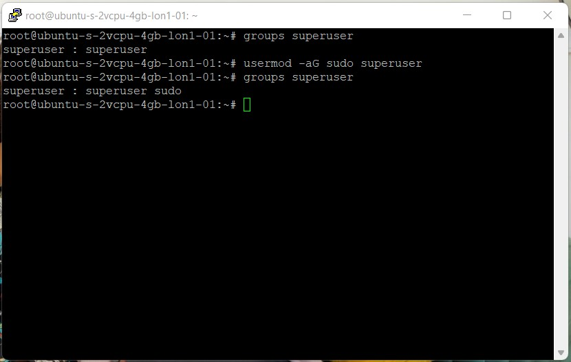
(For a deeper dive into configuring sudo users, you can read this article.)
We then test if this new user actually does have administrative rights like so:
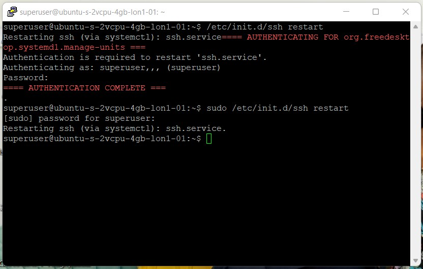
As shown above, we can see that the user does have admin rights once sudo is put in front of the command and they key in their password; this user can control administrative privileges of subsequent users.
The next step is to generate a pair of SSH keys for this user like so:
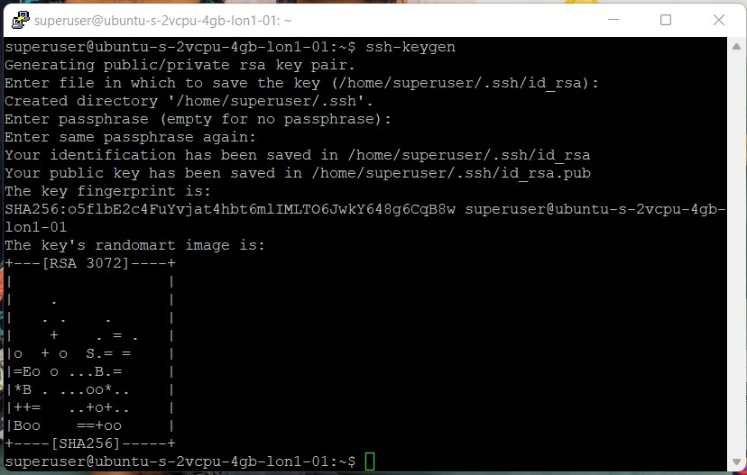
Also authenticate your newly generated key, then test ssh login like so:
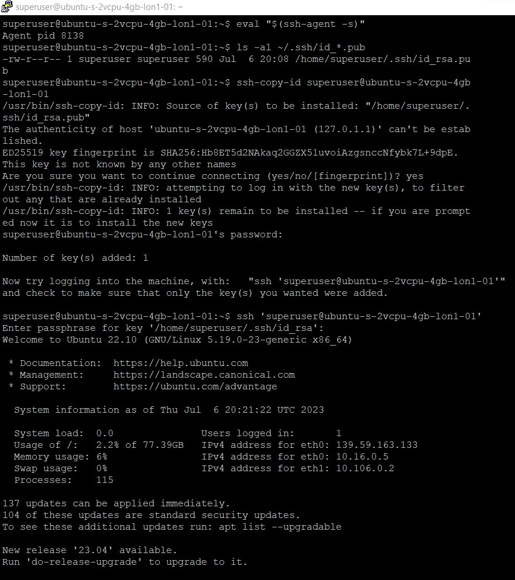
Restrict root access¶
To prevent any localized logins as root using a password, (as per this article)
you use both the -l (lock) and -d (delete password) options, combined as -ld like so:
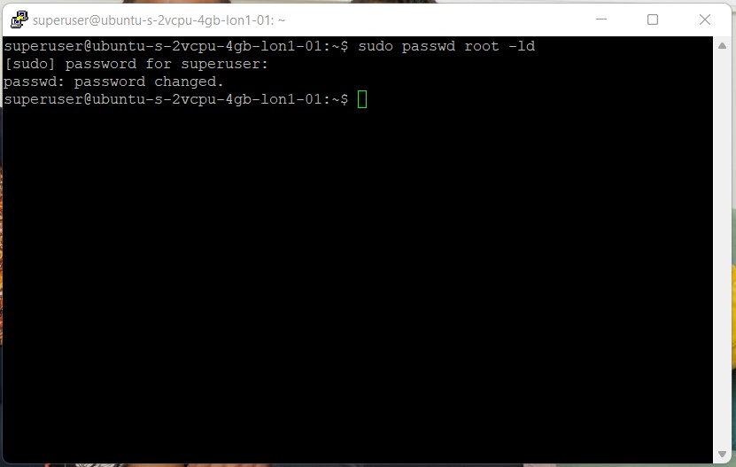
As you can now see below, users are no longer able to log into the server under root.
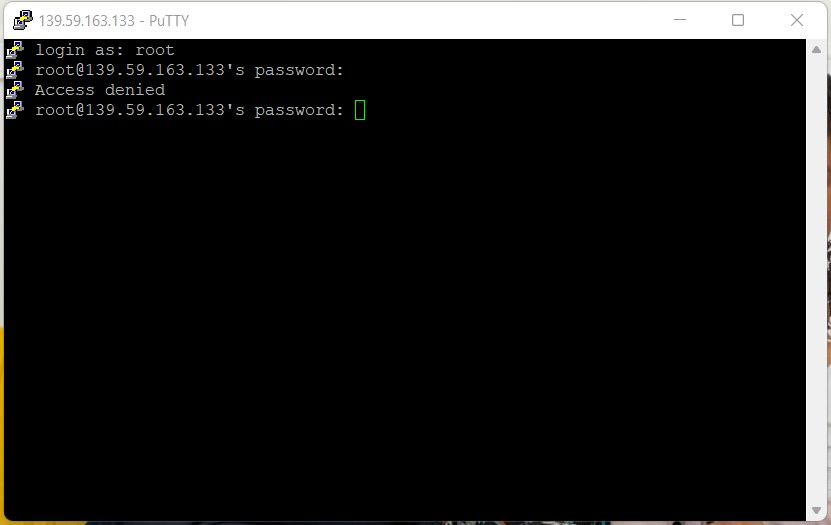
To prevent root login via ssh, as the superuser, navigate to the sshd_config file and set
PasswordAuthenticationtonoPermitRootLogintono
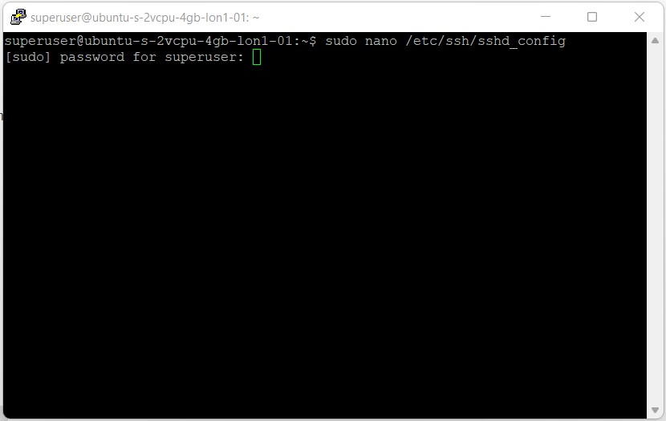
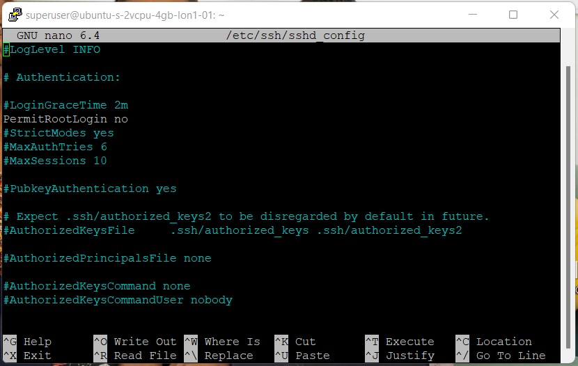
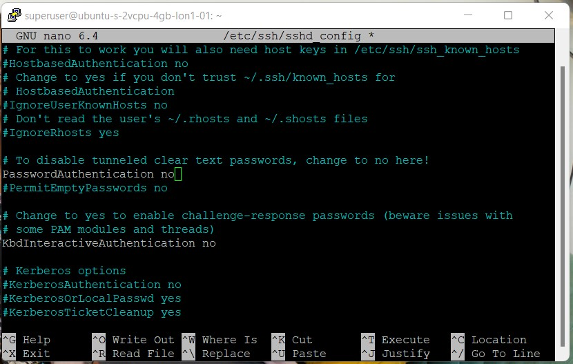
Save your changes, then restart the server for the changes to take effect. If we test login,
after 3 attempts root will be locked out, as shown below:
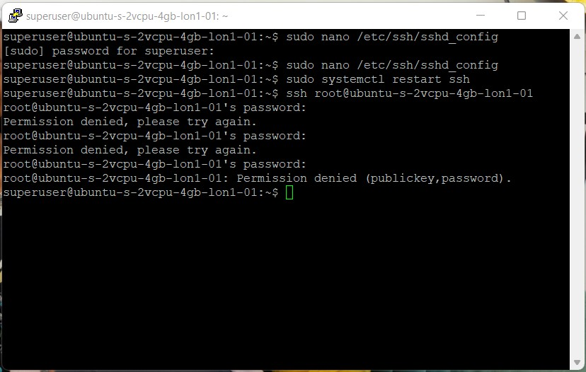